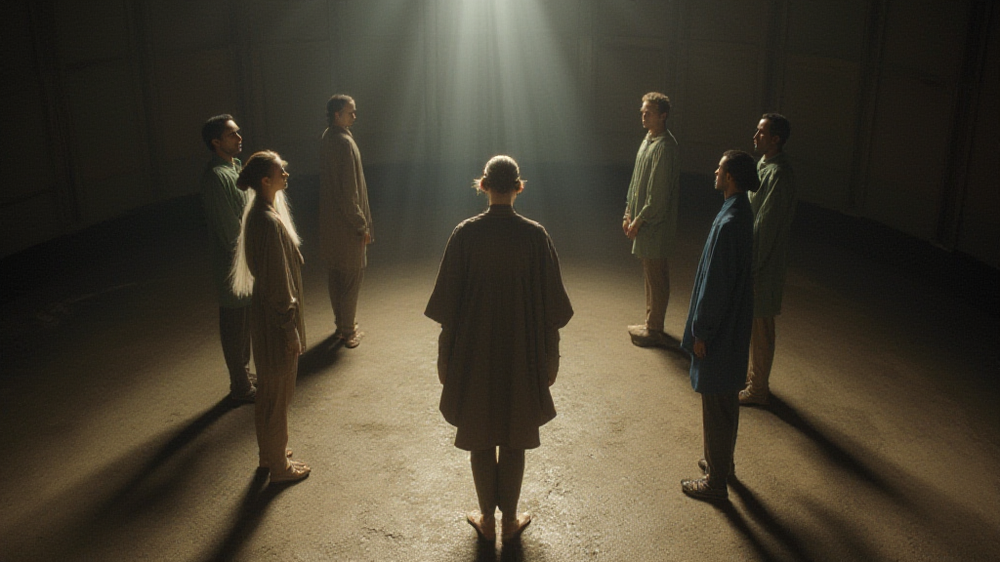
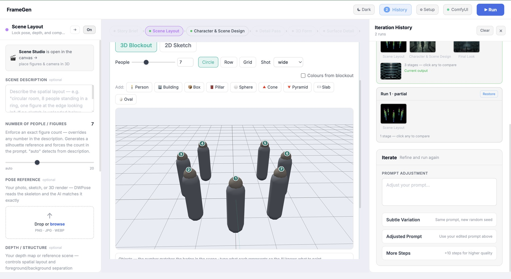
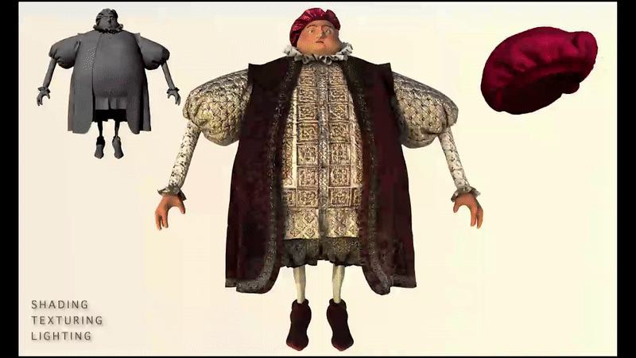

Projects
Fun things I'm building as a creative technologist.
synapse 2026–
A suite of browser tools for visualizing the senses in combination — sound into image, image into sound, touch into light. Each hands you the mapping itself, so you compose your own cross-sensory language.
play with it — live, in this page
an output
the tools
- touch live Conduct a glowing particle field with your cursor or your hands — on-device webcam, nothing uploaded.
- sight live Stack masked effect layers on any image, keyframe every parameter on a timeline, export video or a frame sequence.
- sound live Dissect audio into FFT spectrum, beats and bands, then bind any sound feature to any visual property.
- tune live Split an image into zones that each pick an instrument from their colour and texture, then perform the picture.
- the idea Every tool ships research-grounded defaults — then exposes the mapping as something you can rewrite, so the synesthesia is yours.
framegen 2026–
A story-first, generative-AI film pipeline. You write the brief — character, setting, script, mood, camera — lay your film out as a sequence of moments, and block exactly who's in each shot. FrameGen carries that blocking through design, 3D, lighting and compositing into finished cinematic frames. Runs locally over Blender, ComfyUI and a local LLM.
an output

the workbench

how it works
- story-first A brief — character, setting, script / play-by-play, mood and camera — drives every stage. Lay your film out as a sequence of moments; each becomes a shot.
- block the shot Place figures and the camera in a 3D blockout and lock an exact head-count — the render gives you those figures, in that arrangement, every time.
- design & direct Choose a film style and shot type — wide, close, over-shoulder, dutch — with pose and depth references; DWPose and ControlNet hold the composition.
- staged pipeline Story → layout → design → detail → 3D form → surface → lighting → compositing → final look → sequence. Lock a stage you like; only what's downstream re-renders.
- local & open Runs on your own machine over Blender, ComfyUI and a local LLM — no cloud, no per-render bill.
runs locally — not publicly hosted yet.
facial motion capture 2022–2023
A realtime facial motion capture application built with ARKit, C++, Swift, Python, MEL, and Autodesk Maya — developed as part of UC Berkeley's Advanced Digital Animation course with a team of four. Captures live facial animation through the front-facing camera, smooths the data using differential equations, interpolates to 24 fps, and transfers it into Maya blendshapes for final character animation.
live capture

character pipeline

facial rig

how it works
- capture ARKit's face-tracking API streams 52 blendshape coefficients per frame through a Swift + C++ mobile front-end using the self-facing camera — no markers, no calibration suit.
- smooth & resample Raw ARKit data arrives at device frame rate; differential equations remove jitter and cubic interpolation resamples to exactly 24 fps to match the film's timeline.
- blendshapes A Python + MEL pipeline maps each coefficient to a corresponding blendshape target inside Maya, so the captured performance drives the rig directly.
- impact The tool produced the baseline facial animation for all principal characters and served as the final animation for most shots — filling a gap on a team without enough experienced animators to hand-key at that volume.